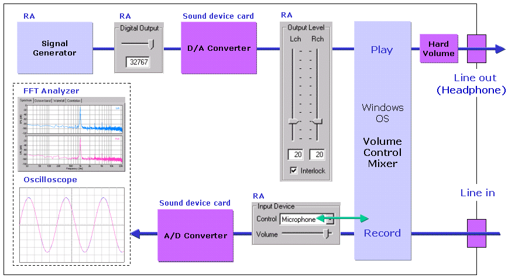
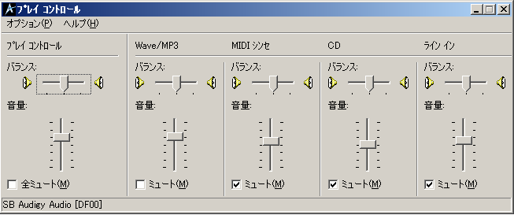

DSSF3 > RA > リファレンス > 補足
ボリュームコントロール
下の図はパソコン内部のサウンド機能構成をあらわします。シグナルジェネレータ(以下、SGと表記)で信号を発生させて、入力装置をWAVEとしてリアルタイムアナライザに取り込む場合、信号はD/Aコンバータでアナログ変換されてからミキサーに入力し、そのミキサーの出力がオシロスコープに入るので、純粋にコンピューター内部での処理ということになります。
＜パソコン内部の機能構成図＞

入力装置の入力バーのボリュームはWindowsのボリュームコントロール（録音）をリモートでコントロールしており連動しています。これを「ソフトボリューム」といいます。

ボリュームコントロール（再生）では、信号を出力させるデバイスを指定します。WAVEを指定しておくことによって、SGの出す信号の音をモニターできます。WAVE以外はミュートします。

「ソフトボリューム」に対して、パソコン本体にある機械式サウンドボリュームを「ハードボリューム」と呼びます。
DSSF3 > RA > リファレンス > 補足